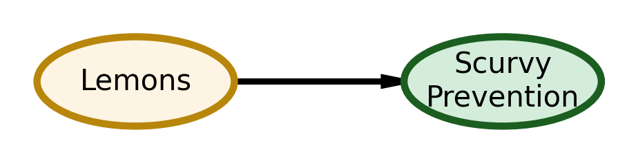

import daft
import matplotlib.pyplot as plt
plt.rcParams['figure.dpi'] = 150
plt.rcParams['savefig.dpi'] = 300
# Create a DAG showing the 1747 understanding: Lemons → Scurvy Prevention
pgm = daft.PGM(dpi=150, alternate_style="outer")
# Lemons: warm cream/amber (citrus, refined)
pgm.add_node("lemons", "Lemons", 1, 1, aspect=2.2, scale=1.1,
plot_params={
'facecolor': '#FDF4E3',
'edgecolor': '#B8860B',
'linewidth': 2.5,
'alpha': 1.0,
},
label_params={'fontweight': 'medium'})
# Scurvy Prevention: soft teal-green (health outcome, professional)
pgm.add_node("scurvy_prevention", "Scurvy\nPrevention", 3.25, 1, aspect=2.2, scale=1.1,
plot_params={
'facecolor': '#D4EDDA',
'edgecolor': '#1B5E20',
'linewidth': 2.5,
'alpha': 1.0,
},
label_params={'fontweight': 'medium'})
pgm.add_edge("lemons", "scurvy_prevention",
plot_params={'color': '#37474F', 'linewidth': 2})
pgm.render()
plt.tight_layout()
plt.show()C:\Users\smolo\AppData\Local\Temp\ipykernel_1208\180552137.py:32: UserWarning: This figure includes Axes that are not compatible with tight_layout, so results might be incorrect.
plt.tight_layout()